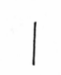
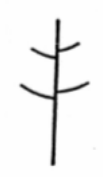
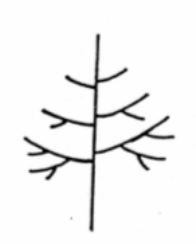
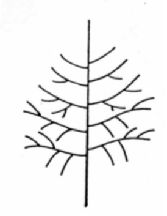
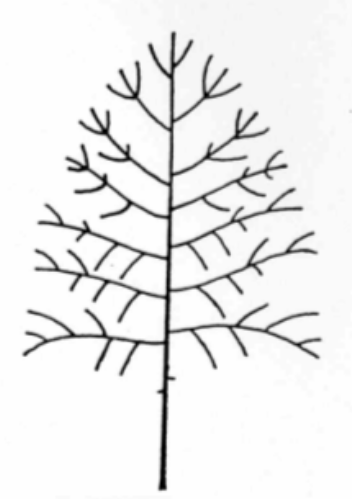
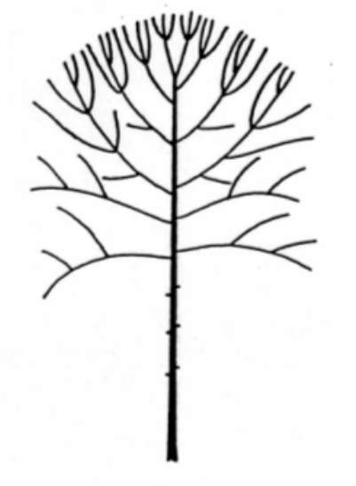
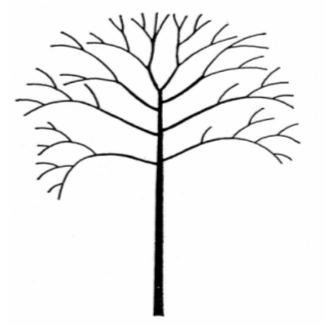
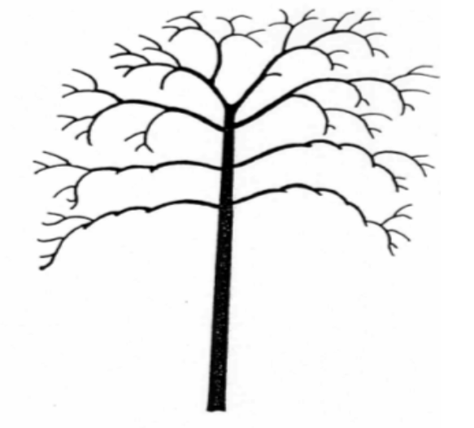
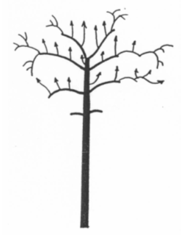
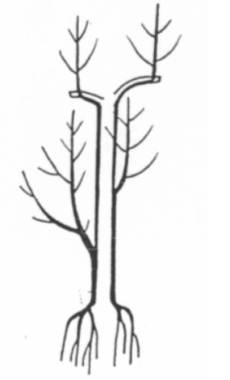

Las edades del árbol
Pierre Raimbault describe que, independientemente de los modelos arquitecturales específicos, el desarrollo natural en todas las especies arbóreas pasa por una serie de fases o etapas desde la germinación de la semilla hasta la muerte por pura vejez de los árboles centenarios, y propone un modelo de 10 fases o etapas.
La vida de un árbol desde la germinación hasta su muerte se puede dividir en 10 etapas. Esta escala es aplicable a todos los árboles ramificados.
Fase 1

El tronco se elabora sin ramificación. Si la yema terminal muere cada año (según especies), la subterminal retoma el alargamiento del tronco.
Fase 2

El tronco sólo presenta brotaciones cortas, que funcionan como hojas.
Fase 3

El tronco presenta ya ramas con todos los órdenes de ramificación, bajo una dominancia apical fuerte. El crecimiento de esas ramas laterales es más o menos horizontal y se ramifican preferentemente desde su cara inferior (hipotonía).
Fase 4

Las ramas más bajas y los extremos de las ramas altas comienzan a escapar de la dominancia apical, y a perder su modo de desarrollo hipótono. Comienza la autopoda de las ramas más bajas. Al final de la fase 4 comienza el debilitamiento de la dominancia apical. Toda ramificación elaborada bajo la dominancia apical constituye una copa temporal que está llamada a desaparecer a medio plazo.
Fase 5

La flecha es aún morfológicamente visible y la copa temporal cubre todavía ampliamente el tronco. Las ramas iniciadas durante la desaparición de la dominancia apical o poco antes toman su independencia y constituyen la copa definitiva. Estas ramas, en su extremidad, comienzan a desarrollarse en todos los planos (isotonía).
Fase 6

La copa temporal, aún ampliamente presente, se va autopodando progresivamente de abajo hacia arriba. La copa definitiva, formada por un conjunto de ramas de importancia equivalente, se redondea, y se generaliza la isotonía. Cada una de tales ramas reproduce el desarrollo que se ha dado en el tronco: primero una dominancia apical que sólo permite la formación de unas ramas laterales débiles y dominadas, después la dominancia se calma, permitiendo el desarrollo de ramas laterales más fuertes, después la dominancia desaparece abriéndose la estructura en dos o tres ramas equivalentes, etc.
Fase 7

El árbol está en plena madurez. El tronco está completamente desnudo y sólo permanece la copa definitiva, que alcanza progresivamente su volumen final. En la base de las
ramas principales, las ramas situadas en la cara inferior, y las viejas ramas hipotonas vigorosas, pierden su vigor y terminan por morir (primer tipo de mortalidad). Fuertes ramificaciones se desarrollan sobre la parte superior de la estructura (epitonía) a partir de ramas ya existentes o neoformadas, renovando progresivamente los ejes principales, que terminan por morir (segundo tipo de mortalidad). Sobre la estructura, las ramificaciones nacidas bajo fuerte dominancia apical mueren las primeras, mientras que las nacidas bajo débil dominancia apical desaparecen más tarde (tercer tipo de mortalidad natural). Se establece así (según un sistema fractal) un sistema de ramificación simplificado, desprovisto de ramas en el interior, densamente ramificado en el exterior. El árbol alcanza su máximo desarrollo.
Fase 8

Aparentemente idéntica a la 7, la progresiva degradación del sistema radicular debilita a la parte aérea. Los brotes anuales no producen más que las hojas ya formadas en las yemas antes de la brotación, y no se producen nuevas ramificaciones en los extremos. Las ramas se renuevan parcialmente no por sus extremos, sino a partir de zonas más internas (epitonía y basitonía en la copa).
Fase 9

Se inicia el descenso de la copa, precedido y originado por la degradación del sistema radicular. El árbol no puede mantenerse en el volumen que alcanzó en la plenitud de las fases anteriores: la mortalidad en la copa sobrepasa la capacidad de renovación y afecta a ramas periféricas cada vez más importantes. Esta mortalidad está precedida por la aparición de reiteraciones cada vez más potentes sobre la estructura y, finalmente, sobre el tronco. Generalmente los árboles mueren o caen en esta fase.
Fase 10

Sólo la alcanzan algunos árboles. El árbol se hunde en sí mismo. La copa muere por completo. Fuertes reiteraciones aparecen en el tronco. Estos brotes se hacen progresivamente independientes del conjunto del árbol, formando columnas cambiales a lo largo del tronco y desarrollando sistemas radiculares propios.
En resumen,
- A lo largo de las 4 primeras fases, la planta elabora el tronco y la copa temporal, que se desarrolla en modo hipotono bajo una dominancia apical fuerte.
- Durante las fases 5 y 6, las ramas que se han hecho independientes se reiteran indefinidamente ramificándose bajo un modo isotono: el árbol elabora su estructura definitiva.
- Durante las fases 7 y 8, el árbol mantiene el volumen de su copa, renovando parcialmente sus ramas bajo el modo epitono.
- Durante las fases 9 y 10, la copa desciende y el árbol se repliega a posiciones más interiores.
Obviamente, este desarrollo es una simplificación, un modelo. Incluso en los mejores ejemplos reales, el modelo de Raimbault no es seguido fielmente, sino que se pueden producir altibajos, con expansiones, estancamientos e, incluso, retrocesos del desarrollo de la copa. Este modelo sólo representa el desarrollo del árbol ideal, óptimo, aunque la
comprensión de ese modelo ayuda a entender también el desarrollo estructural de los casos particulares.